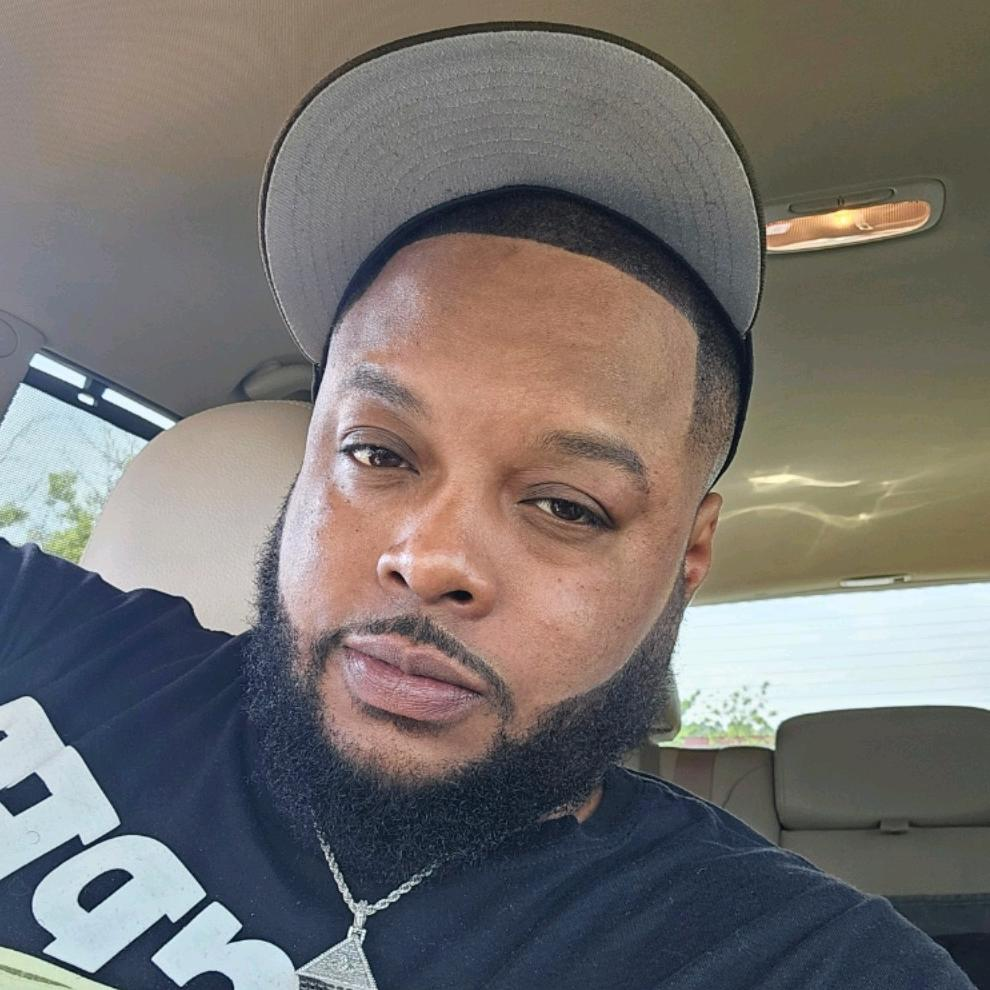

1 · SHARP FACIAL SELFIE
Face, beard and jewelry

Image unavailable. The original source and provenance remain linked below.
The clearest facial detail in this set. Use the brows, nose, beard breadth and triangular pendant. The source cap is excluded from the cameo.
990 × 990 · native artist-hub image, unchanged JPEG